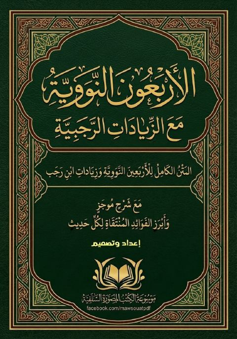

Downloads need an internet connection.
الأربعون النووية مع الزيادات الرجبية مع شرح موجز وأبرز الفوائد المنتقاة لكل حديث
Authors: ابن رجب الحنبلي
Editors: شاكر التبسي
▫️ العنوان: الأربعون النووية مع الزيادات الرجبية مع شرح موجز وأبرز الفوائد المنتقاة لكل حديث ▪️ المؤلف: #ابن_رجب_الحنبلي ▫️ المحقق: #شاكر_التبسي ▪️ الناشر: # ▪️ تاريخ النشر: 1448هـ 2026م ▫️ بلد النشر: ▪️ الطبعة: 1 ▫️ عدد الأجزاء: 1 ▪️ الصفحات: 54 ▪️ نوع الوعاء: #كتاب ▫️ التصنيف الرئيسي: #الحديث_وعلومه